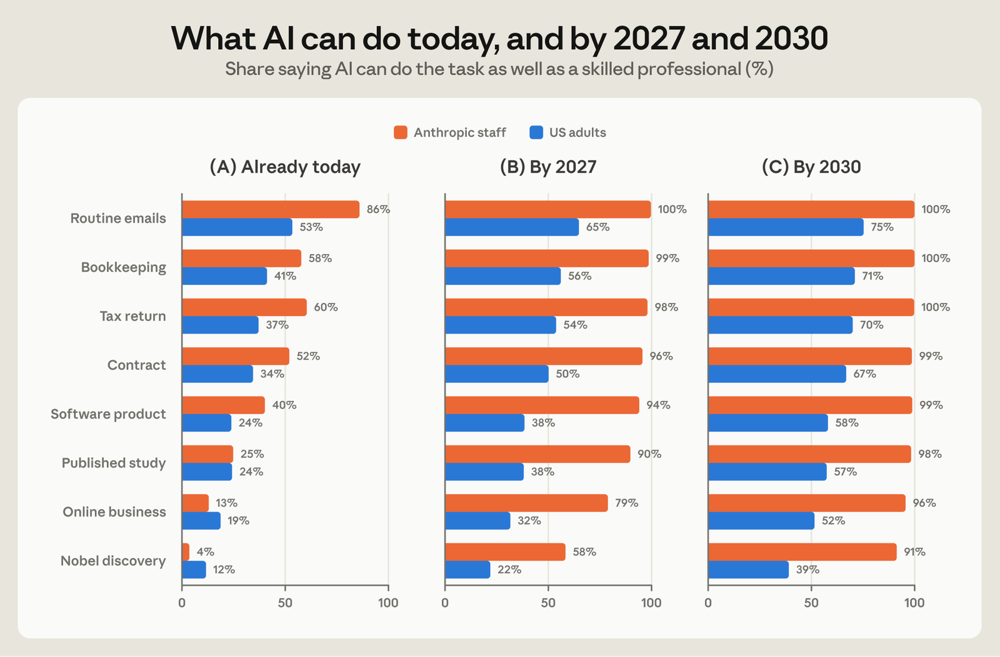
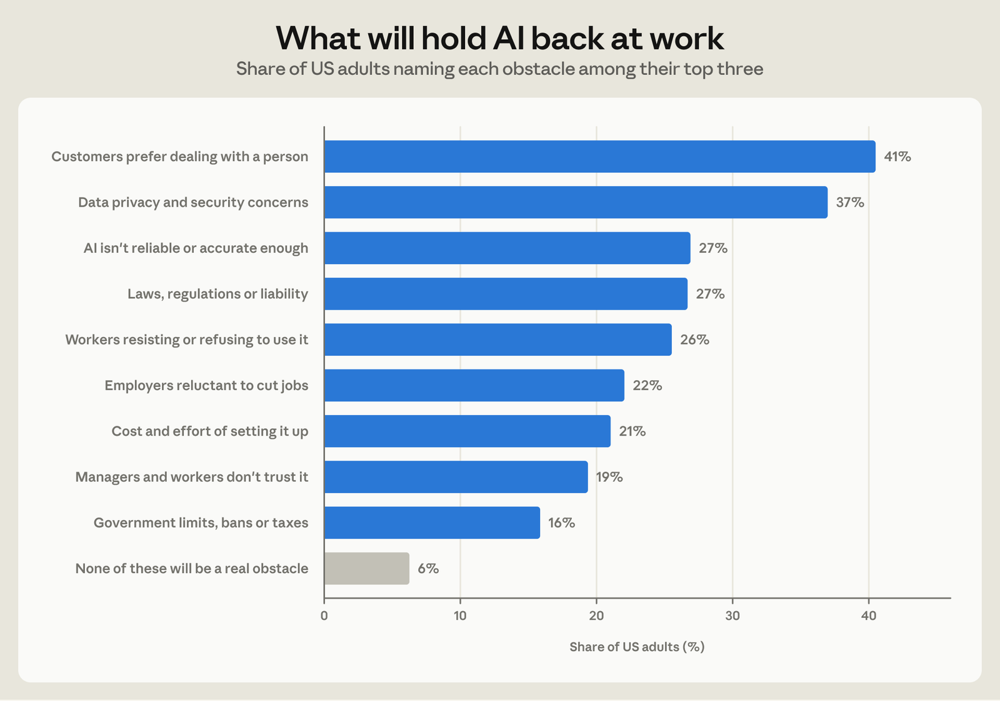
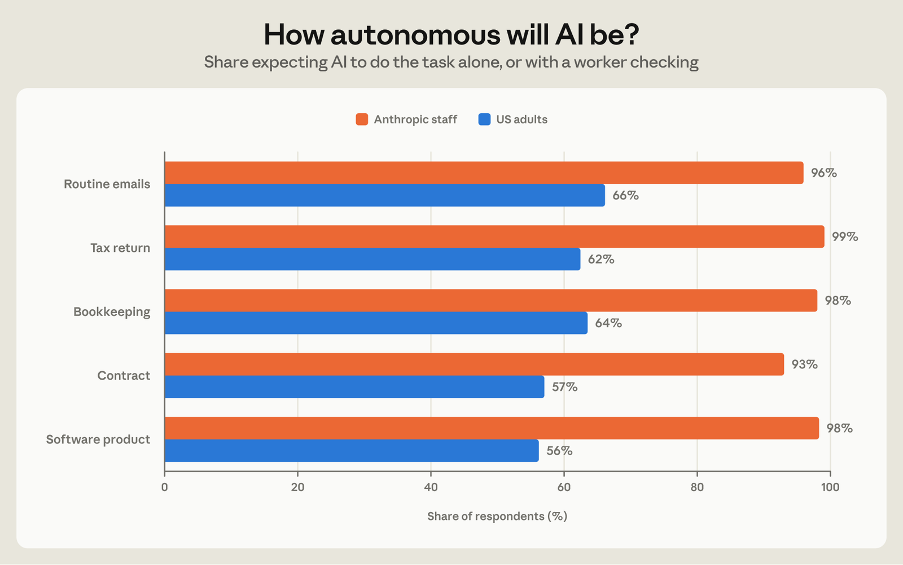
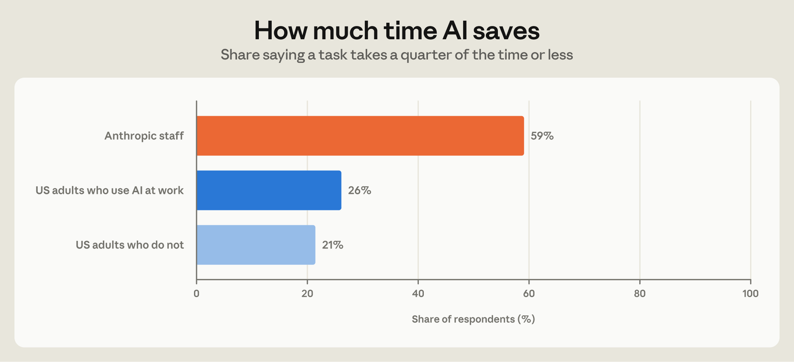
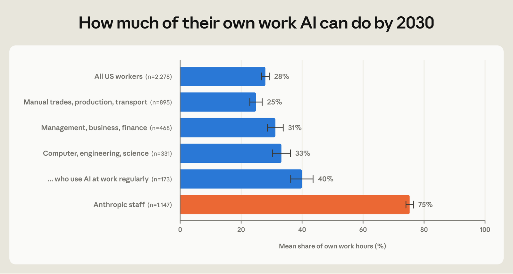
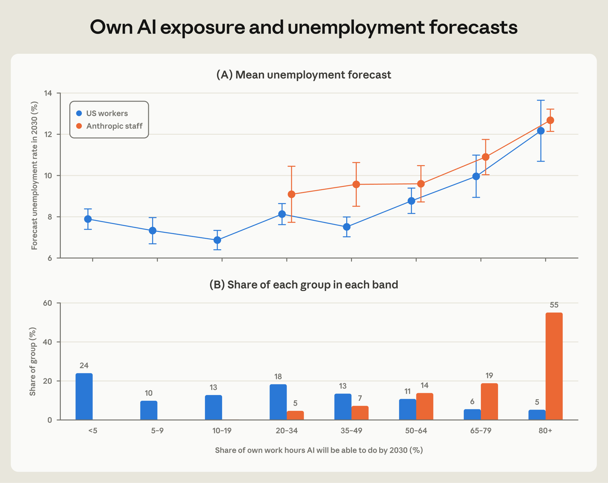
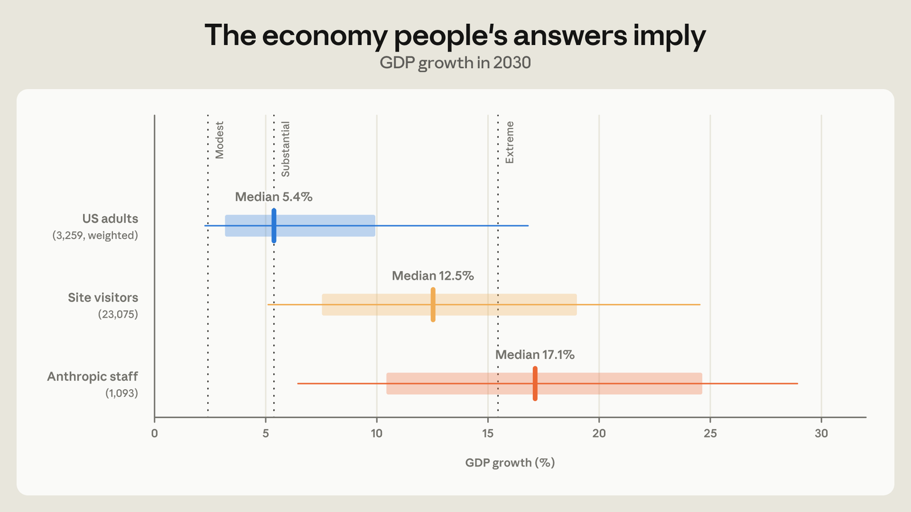
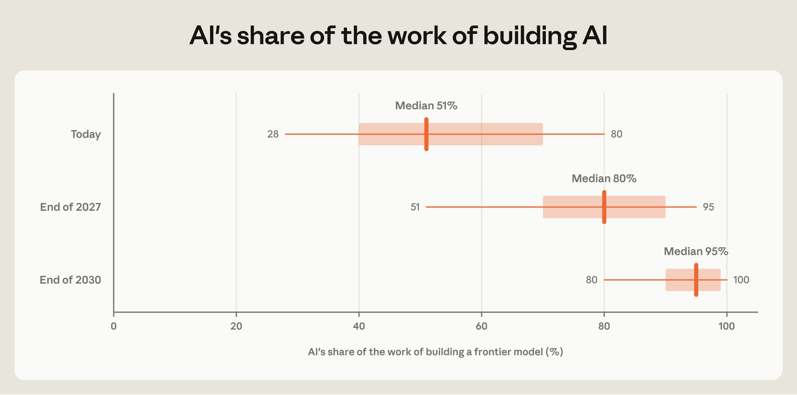

Key findings
- US adults expect AI capabilities to advance rapidly in the coming years; Anthropic staff expect even faster progress; 39% of US adults and 91% of staff expect that AI will be able to make a Nobel-level discovery by 2030.
- Anthropic staff expect much larger productivity gains from AI on the tasks it is well-suited for. Among US adults who use AI at work, 26% say a task takes a quarter of the time or less with AI, compared to 59% of Anthropic staff.
- When it comes to their own job, over half of Anthropic staff expect AI to be able to do at least 80% of their current work by 2030, compared with 5% of US workers.
- Among both US workers and Anthropic staff, people who expect AI to do more of their own work anticipate higher unemployment. While there are differences in beliefs about future capabilities, the perceived link between how AI might change one’s own job and broader unemployment is very similar for both groups.
Introduction
How will AI reshape the economy in the years ahead? AI capabilities are advancing rapidly, and the possibility that future AI models may be able to build their own successors (recursive self-improvement) could further accelerate the rate of progress. How quickly this might materialize and to what extent is unclear. Forecasts vary widely and are fiercely debated.
What is the core source of disagreement about AI's future impact on the economy? Is it principally due to differences in beliefs about how quickly AI capabilities will improve? Or does it reflect disagreement about how quickly and in what form those capabilities translate to real-world adoption? Which views on the future path of AI are consistent with rapid economic growth?
This note presents new survey evidence on these questions. In August 2026, we surveyed two groups: a sample of US adults that was nationally representative and Anthropic staff.1 The questions covered, among other things, AI’s capabilities, how widely it will be used, how much time it saves, how autonomous it will be, and how difficult it will be for a displaced worker to find a job in a different occupation.2 Anthropic staff build and use frontier AI every day. The second survey therefore shows how people closest to the technology anticipate its future, both in capabilities and in broader economic impact.
We report the following main findings. First, the two groups largely agree about what AI can do today but disagree about the pace of future progress. Anthropic staff expect capabilities to advance faster, AI to be used more widely and with less human involvement, and the time it saves on a task to be much larger. For example, 91% of staff expect AI to be able to make a Nobel-level discovery by 2030, compared to 39% of US adults.
Second, there are sharp differences concerning people's own jobs. On average, staff members expect AI to be able to do 75% of their current work by 2030, compared to 28% for US workers overall.
Third, the two groups seem to reason about the labor market in a similar way: people who expect AI to do more of their own work in the future forecast higher unemployment. And, at the same level of expected AI automation of their own work, both groups forecast about the same unemployment rate.
What people expect AI to do
Capabilities
We first investigate expectations about AI capabilities. We asked when AI will be able to do each of eight tasks as well as a skilled professional, from writing routine emails to making a Nobel-level scientific discovery. US adults and Anthropic staff largely agree on what AI can do today, particularly when it comes to more complex tasks. Both groups rank tasks in nearly the same order of difficulty (Figure 1, panel A).
The groups disagree on the path of future AI progress. For example, around a quarter of US adults and Anthropic staff think that AI can design, conduct, and publish scientific studies today. But by next year, 9 in 10 staff expect this to be feasible for AI as compared to just 38% for the general public. By 2030, 39% of US adults expect AI to be able to make a Nobel-level discovery (panel C), compared with 91% of staff. What is perhaps the most striking difference, depending on the task, between 19 and 40% of US adults say AI will never be able to do a given task, compared with at most 2% of staff.
In part, differences in views reflect differences in frequency of AI use. Among those who use AI at work regularly (about a fifth of respondents), 56% expect AI to be able to do at least seven of the eight named tasks by 2030. This is substantially higher than among all US adults (41%) and among those who have never used an AI tool (28%), but still well short of the staff view (96%).

Adoption and its obstacles
The impact of AI on the economy is not solely determined by raw capabilities. People and businesses need to actually use AI, which takes time and experimentation. Of the work tasks AI will be able to do, US adults expect that 42% will be done with AI by 2030. Anthropic staff expect noticeably faster diffusion over the next few years, with AI used for 65% of all tasks for which it could be used.
To understand what might hold back AI adoption at work, we asked US adults to choose up to three obstacles from a list of nine that they expect to be the biggest. The general public expects that people's preferences and rules, more than the technological constraints, may be what holds adoption back (Figure 2). “Customers preferring to deal with a person” was the obstacle selected most often, followed by “data privacy and security concerns,” “AI not being reliable enough,” and “laws, regulations or liability.”

Notably, US adults who use AI regularly at work rank data privacy and security concerns first (42% consider it among the top 3 obstacles, compared with 37% among the rest) and see customer preferences to deal with humans as slightly less important (37% vs 42%).
How autonomous AI will be
The impact of AI on the labor market will in part depend on whether AI completes complex tasks autonomously or in collaboration with a human. The former tends to displace human workers. Alternatively, when AI complements human capabilities, workers become more productive. To get a sense for anticipated automation versus augmentation in 2030 among Anthropic staff and the general public, we asked how AI and humans will work together on various tasks ranging from email drafting to legal contracting by 2030. At Anthropic, the vast majority of staff say that by 2030 AI will either complete tasks alone or with a worker evaluating the work (Figure 3). By contrast, 4 in 10 US adults instead expect that humans will do most of the work themselves or with some AI help.

Time savings
How much AI raises output depends not only on which tasks it can do and how widely it is used, but also on how much faster and better it does them. A technology that is just good enough to replace workers—what Acemoglu and Restrepo (2019) call a "so-so" technology—displaces work without much increase in GDP. By contrast, a technology that completes tasks at a small fraction of cost or in a fraction of time can meaningfully raise GDP.
To measure perceptions about the productivity lift from AI, we asked the general public and Anthropic staff how long a task for which AI is well suited takes with AI, compared with doing it without AI. A task done in half the time corresponds to a doubling of output per hour.3
Anthropic staff report much larger expected savings, with 85% saying that it takes half the time or less. Among US adults who use AI at work, the typical answer is half the time, and 29% say the task takes just as long or longer, while only 5% of staff say so. Among US adults, 26% of those who use AI at work say a task takes a quarter of the time or less, and 21% of those who do not use AI at work say the same. For staff, that share is 59% (Figure 4).
Staff may be describing what they experience at work. As discussed further in How Employment is Changing at Anthropic, Anthropic employees increased productivity on some dimensions after adopting agentic tools: the lines of code engineers added tripled in the month after adopting coding agents and sales representatives closed more deals with clients after adopting AI agents. Output per person also rose in other business functions, like legal and recruiting.

Own work and jobs
How much of their own work AI will be able to do
Perhaps unsurprisingly, we find a large gap in perceptions between the general public and Anthropic staff when it comes to AI’s impact on their own jobs (Figure 5). On average, Anthropic staff members say AI will be able to do 75% of their current work hours by 2030. US workers (respondents who report having a job) put the share at 28% on average, and only 1 in 20 say that AI could do 80% or more of their work hours by 2030.
Across US workers, expectations vary by occupation: AI is expected to be able to do 25% of work hours among manual trades, production and transport workers and 33% for workers in computer, engineering and science occupations. For this latter group, those who use AI regularly expect only 40%, a belief that is closer to the average US worker than to the average Anthropic staff member (75%).

Own-job exposure and unemployment forecasts
How much of their own work people expect AI to do goes a long way toward explaining what they expect for the labor market. We told respondents that the current unemployment rate was about 4.2% and asked them to forecast the rate in 2030. Figure 6 groups respondents by the share of their own hours they expect AI to be able to do by 2030, and shows each group's average unemployment rate forecast.
US workers who expect AI to be able to do less than half of their work forecast unemployment of 7 to 8%. Above half, the forecast increases with the share of AI-exposed work. Those who expect AI to do 80% or more of their work expect, on average, an unemployment rate of 12.2% in 2030, above its peak during the Great Financial Crisis. Across US workers, ten more percentage points of work affected is associated with 0.4 points more forecasted unemployment. General optimism about AI does not explain this. Holding their own work exposure fixed, the share of the eight tasks a worker expects AI to master is unrelated to the forecast.
Even though their own reported exposure is much higher, the same gradient appears among Anthropic staff, with forecasts closely mirroring those of the general population. Therefore, these two groups do not seem to hold different theories of how AI will simultaneously affect their own jobs and the broader labor market. They have different experiences of what AI capabilities are and, in turn, expectations.

Hiring and re-employment
Even though Anthropic staff expect AI to be able to do most of their work, they also expect Anthropic to keep hiring. 95% of Anthropic staff expect headcount to grow over the next 12 months, the median staff member expects it to grow by 66%, and 27% expect it at least to double. These are the personal expectations of staff members in an internal poll and do not represent Anthropic's plans or its view of its headcount. Even so, they show that automating tasks and shedding jobs are different forecasts, at least at a frontier AI lab.
Anthropic staff, however, are slightly more pessimistic than US adults about how quickly workers displaced by AI can find new work. We asked how long it would take a person who loses their job to AI automation in 2030—and who needs to switch occupations—to find a new one.4 The median Anthropic staff member expects that a worker displaced by AI would take 12 months to find a role in a new occupation. This compares to the median US adult response in the range of 7-12 months.
Expectations about AI and their economic implications
Mapping survey responses to model-implied economic scenarios
In Economic Scenarios for Transformative AI we introduced a structured framework for assessing how different future paths for AI capabilities and diffusion might translate into differences in economic outcomes. The model allows us to translate each respondent’s answers across five dimensions — capabilities, diffusion, automation, productivity, and worker transition frictions — into model-implied economic outcomes.5 Across both our US adult and Anthropic staff samples, we identify every respondent who answered all questions related to the key model inputs (3,259 US adults and 1,093 staff). We then evaluate the economic scenario implied by those answers for each respondent, focusing below on implications for GDP growth in 2030.
The median US adult's answers imply GDP growth of 5.4% in 2030, according to the model. The median staff member's answers imply GDP growth accelerating to 17.1% by 2030. There is significant variation within each group, so the distributions overlap widely (Figure 7). Figure A1 in the appendix shows how much each belief contributes to this gap.
Responses from online scenario explorer quiz
Figure 7 also shows the economic scenarios implied by inputs provided by site visitors to an interactive scenario explorer based on this economic model that was published at www.anthropic.com/institute/econ-scenarios on September 9, 2026.
The interactive explorer asked shorter form versions of the questions we fielded to US adults and Anthropic staff in August 2026. 23,075 visitors completed the survey in the first 48 hours after publication, connecting from more than 140 countries worldwide. These visitors chose to come to a page on Anthropic's website and to take the quiz, so they are likely to be more interested in AI than the general public. Indeed, their answers place them between those of US adults and Anthropic staff: the median visitor's answers imply 12.5% growth.

Inside the lab
One reason staff are more optimistic about AI capabilities may be that they have greater visibility into the development process. The Anthropic Institute recently published a report on progress toward recursive self-improvement (RSI), a process where AI systems increasingly improve their own capabilities (Favaro and Clark, 2026).
To shed light on whether staff themselves expect this to happen, we asked Anthropic staff what share of the work of building an early-2026 frontier model is done by AI today, and what they expect it to be in the future (Figure 8).6 Among surveyed Anthropic staff, the median answer today is 51%, 80% by the end of 2027 and 95% by the end of 2030.
Estimates of the share of work that AI does in AI development vary far more within teams than between them. Still, staff on research teams, who are closest to the work of building models, put AI's share today somewhat higher: 60% on average, against 53% for all other survey respondents. This is consistent with information playing some role, although researchers—by virtue of the nature of their work—may also use AI more in their own work than other employees.
As with the hiring forecasts, these responses are the personal views of staff members in an internal poll fielded to Anthropic staff in August 2026.

Conclusion
US adults and Anthropic staff largely agree about what AI can do today. However, they disagree about how quickly it will improve, how widely it will be used, and how large the productivity gains measured by time saved will be. Through the lens of the model in Economic Scenarios for Transformative AI, the median US adult's answers imply a scenario in which the US economy grows at more than twice its typical rate. Among Anthropic staff working at the frontier of AI development and usage, expectations about AI progress, adoption, and automation of knowledge work imply a transformative and historically unprecedented change to the economy: by 2030, GDP is doubling in size roughly every four and a half years.
Those who expect AI to do more of their own work in the years ahead expect higher unemployment as well. This is true for the general public in the US and among Anthropic employees; on average, Anthropic staff expect faster automation of their own work and, in turn, higher unemployment. We find that this disagreement in expectations is closely tied to differing views between Anthropic staff and the general public about how much of their own work will be automated in the years ahead.
The day-to-day experience with AI varies widely between the two groups. Most Anthropic staff already work alongside AI that does much of their job, whereas few US workers do. Those who do already hold expectations closer to those of Anthropic staff, which suggests that public expectations may shift as AI use spreads. How far they shift will depend on whether AI comes to do as much of the work elsewhere as it does at a frontier lab.
Suggested citation
@techreport{sacher2026expectations,
author = {Sacher, Szymon and Cotter, Tess and Jones, Charles I. and Korinek, Anton and McCrory, Peter},
title = {The {AI} Expectations Gap: Public and Frontier Lab Views on {AI}'s Impact on Work},
institution = {The Anthropic Institute},
type = {Technical Report},
year = {2026},
month = oct,
url = {https://www.anthropic.com/research/ai-expectations-gap}
}Acknowledgments
Scott Booth, Meredith Callan, Yena Cho, Adam Farina, Ben Fowler, Ryan Heller, Aisling Keenan, Eva Lyubich, Maxim Massenkoff, Matt Mohn (Morning Consult), Matt Monday (Morning Consult), Kerry Persen, Sarah Pollack, Santi Ruiz, Monika Tuchowska, Heather Whitney, Nathan Wilmers, Kim Withee, Charles Yang, Jack Clark, Dario Amodei
References
Acemoglu, D. and P. Restrepo (2019). "Automation and New Tasks: How Technology Displaces and Reinstates Labor." Journal of Economic Perspectives 33(2), 3–30.
Favaro, M. and J. Clark (2026). “When AI Builds Itself.” The Anthropic Institute. https://www.anthropic.com/institute/recursive-self-improvement.
Korinek, A., C. I. Jones, S. Sacher, T. Cotter and P. McCrory (2026). "Economic Scenarios for Transformative AI." The Anthropic Institute Working Paper No. 2026-02.
Massenkoff, M., E. Lyubich, S. Sacher, Z. Hitzig, S. Zhang, R. Heller and P. McCrory (2026). “Anthropic Economic Index report: Cadences.” The Anthropic Institute. https://www.anthropic.com/research/economic-index-june-2026-report.
Wilmers, N., R. Catipon, M. Massenkoff and P. McCrory (2026). “How Employment is Changing at Anthropic.” The Anthropic Institute. https://www.anthropic.com/research/employment-at-anthropic.
Appendix
Available here.